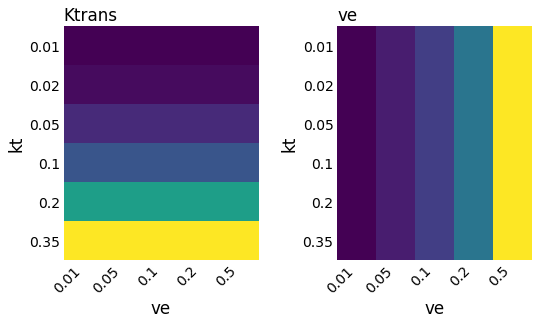
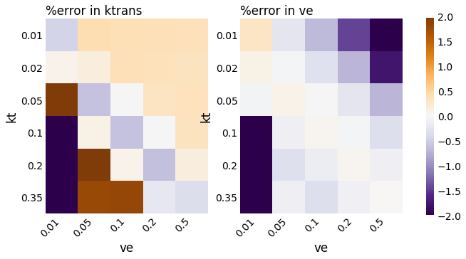

QIBA V6 - Tofts Model
Contents
QIBA V6 - Tofts Model¶
import os
import matplotlib.pyplot as plt
plt.style.use('https://gist.github.com/notZaki/8bfb049230e307f4432fd68d24c603a1/raw/c0baa2a1c55afdf1764b26ee2ebeb1cbf26d8d98/pltstyle')
The following tests are on the QIBA v6 phantom which simulates the Tofts model.
First, let’s load the required modules and download the data:
from osipi_code_collection.wrappers.tofts import tofts_fit, show_maps, show_error_maps
from osipi_code_collection.utils.nb import download_osf, loadmat
/opt/hostedtoolcache/Python/3.8.12/x64/lib/python3.8/site-packages/dicom/__init__.py:53: UserWarning:
This code is using an older version of pydicom, which is no longer
maintained as of Jan 2017. You can access the new pydicom features and API
by installing `pydicom` from PyPI.
See 'Transitioning to pydicom 1.x' section at pydicom.readthedocs.org
for more information.
warnings.warn(msg)
# Download the QIBA phantom data
url = "https://osf.io/xhn3y/download"
dcefile = "./data/qiba_tofts.mat"
download_osf(url, dcefile);
# Load the QIBA phantom data
dcedata = loadmat(dcefile)
The QIBA phantom contains 6 ktrans values and 5 ve values, resulting in 30 total parameter combinations:
show_maps(kt = dcedata.kt, ve = dcedata.ve, truth = dcedata)

Model fitting¶
Linear least squares¶
Linear least squares fitting is fast, but might be more sensitive to noise. There are two implentations using linear least squares.
Linear implementation 1
%%time
fits = tofts_fit("manchester", data = dcedata)
show_error_maps(fits, truth = dcedata, clim = (-2, 2), showcbar = True)
CPU times: user 102 ms, sys: 24.3 ms, total: 126 ms
Wall time: 73.8 ms
Linear implementation 2
%%time
fits = tofts_fit("oslo", data = dcedata, fittype = "linear")
show_error_maps(fits, truth = dcedata, clim = (-2, 2), showcbar = True)
/opt/hostedtoolcache/Python/3.8.12/x64/lib/python3.8/site-packages/osipi_code_collection/original/OGJ_OsloU_Norway/MRImageAnalysis/DCE/Analyze.py:264: FutureWarning: `rcond` parameter will change to the default of machine precision times ``max(M, N)`` where M and N are the input matrix dimensions.
To use the future default and silence this warning we advise to pass `rcond=None`, to keep using the old, explicitly pass `rcond=-1`.
B = np.linalg.lstsq(A, signal)
CPU times: user 68.5 ms, sys: 45 µs, total: 68.6 ms
Wall time: 67.9 ms
Non-linear least squares¶
Non-linear least squares fitting is slower, but should be more robust to noise. However, as the next section shows, the accuracy can be substantially different between implementations.
Nonlinear implementation 1
%%time
fits = tofts_fit("oslo", data = dcedata, fittype = "nonlinear")
show_error_maps(fits, truth = dcedata, clim = (-2, 2), showcbar = True)
CPU times: user 295 ms, sys: 0 ns, total: 295 ms
Wall time: 295 ms
Nonlinear implementation 2
%%time
fits = tofts_fit("edinburgh1", data = dcedata)
show_error_maps(fits, truth = dcedata, clim = (-2, 2), showcbar = True)
CPU times: user 406 ms, sys: 172 µs, total: 406 ms
Wall time: 406 ms

Nonlinear implementation 3
%%time
fits = tofts_fit("edinburgh2", data = dcedata)
show_error_maps(fits, truth = dcedata, clim = (-2, 2), showcbar = True)
CPU times: user 749 ms, sys: 0 ns, total: 749 ms
Wall time: 750 ms
Nonlinear implementation 4
%%time
fits = tofts_fit("sydney", data = dcedata)
show_error_maps(fits, truth = dcedata, clim = (-2, 2), showcbar = True)
CPU times: user 814 ms, sys: 0 ns, total: 814 ms
Wall time: 813 ms
Nonlinear implementation 5
%%time
fits = tofts_fit("amsterdam", data = dcedata)
fitting 30 voxels
[Parallel(n_jobs=1)]: Using backend SequentialBackend with 1 concurrent workers.
/opt/hostedtoolcache/Python/3.8.12/x64/lib/python3.8/site-packages/scipy/optimize/_lsq/trf.py:234: RuntimeWarning: divide by zero encountered in true_divide
Delta = norm(x0 * scale_inv / v**0.5)
/opt/hostedtoolcache/Python/3.8.12/x64/lib/python3.8/site-packages/scipy/optimize/_lsq/trf.py:363: RuntimeWarning: invalid value encountered in double_scalars
alpha *= Delta / Delta_new
[Parallel(n_jobs=1)]: Done 1 out of 1 | elapsed: 0.1s remaining: 0.0s
/opt/hostedtoolcache/Python/3.8.12/x64/lib/python3.8/site-packages/scipy/optimize/_lsq/common.py:49: RuntimeWarning: invalid value encountered in double_scalars
t2 = c / q
[Parallel(n_jobs=1)]: Done 2 out of 2 | elapsed: 0.1s remaining: 0.0s
[Parallel(n_jobs=1)]: Done 3 out of 3 | elapsed: 0.3s remaining: 0.0s
[Parallel(n_jobs=1)]: Done 4 out of 4 | elapsed: 0.5s remaining: 0.0s
CPU times: user 10 s, sys: 244 ms, total: 10.3 s
Wall time: 9.89 s
[Parallel(n_jobs=1)]: Done 30 out of 30 | elapsed: 9.6s finished
show_error_maps(fits, truth = dcedata, clim = (-2, 2), showcbar = True)
